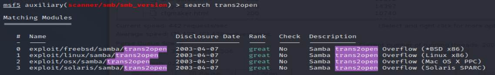
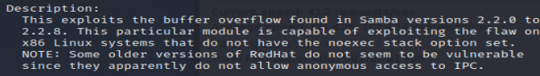

From searchsploit : trans2open
> search trans2open

> info exploit/linux/samba/trans2open
- => Known :
- - Version of Samba : 2.2.1a
- => Unknown :
- Version of Redhat ?
- x86 system ?
=> In a production environment, if permission granted : run exploit